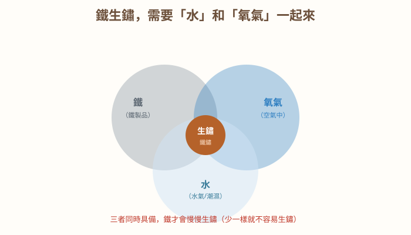
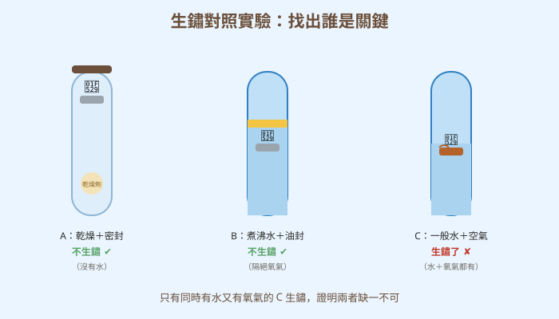
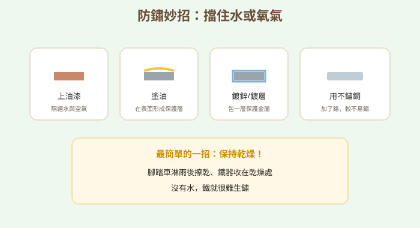
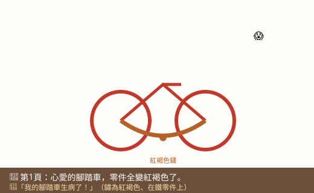
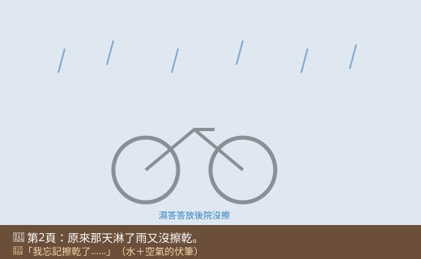
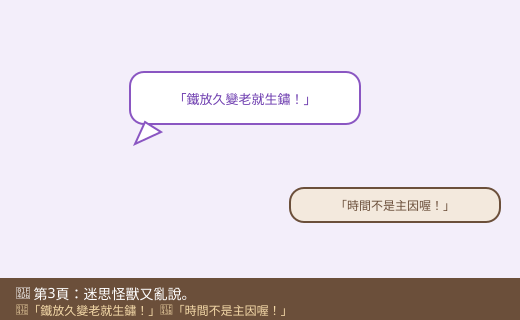
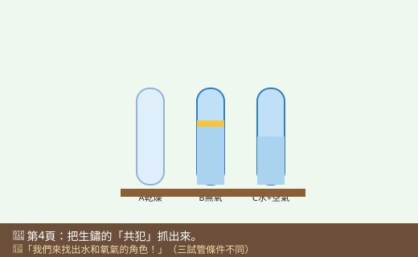
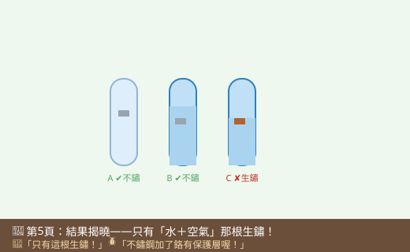
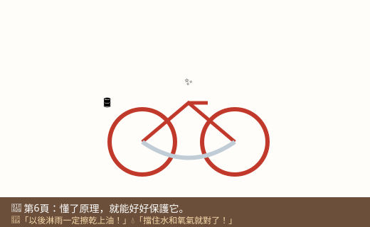

圖一（概念總覽圖）：生鏽的條件

- 圖像目的
- 用交集圖呈現「鐵＋水＋氧氣→生鏽」的條件關係。
- 圖中應出現的元素
- 鐵、水、氧氣三個重疊圈，交集處標「生鏽（鐵鏽）」。
- 必須標示的科學概念
- 水與氧氣同時存在才易生鏽；缺一樣就不易生鏽。
- 圖說
- 「三者同時具備，鐵才會慢慢生鏽。」
- AI 繪圖提示詞
- 溫暖手繪科普風，三個重疊圓分別標鐵、水、氧氣，交集處畫紅褐色鐵鏽並標「生鏽」。繁體中文。
- 避免畫錯的提醒
- 生鏽在三者交集；強調「同時具備」；鐵鏽為紅褐色。
💡 鐵不是「變老」才生鏽——它其實是偷偷和空氣、水談了場戀愛！
| 適合年級 | 國小五年級 |
|---|---|
| 可銜接年級 | 五年級 → 國中氧化還原 |
| 主題分類 | 物質、熱與變化 |
| 核心概念 | 生鏽的條件（水與氧氣）；防鏽方法；變因控制 |
| 關鍵詞 | 生鏽、氧化、水氣、氧氣、防鏽、不鏽鋼、變因 |
| 可銜接的國中概念 | 氧化反應、氧化還原、金屬的活性 |
| 建議閱讀時間 | 約 20 分鐘 |
| 適合搭配的課堂活動 | 鐵釘生鏽對照實驗、防鏽方法調查 |
小狐同學有一台心愛的紅色腳踏車。上個月他騎去河邊玩，回家時下起大雨，他懶得擦，就把濕答答的腳踏車丟在後院沒管它。這個週末他想再去騎，一看卻傻眼了——原本亮晶晶的銀色鏈條和螺絲，全都變成一層紅褐色、粗粗醜醜的東西，還有點卡卡的。
「我的腳踏車生病了！」小狐同學用手一摸，紅褐色的粉末沾了滿手，「這是什麼啊？怎麼擦都擦不太掉。」他跑去問甲蟲博士，博士看了一眼就說：「這是『鐵鏽』啊，你的鐵零件生鏽了。」
小狐同學更困惑了：「生鏽？可是我隔壁鄰居的腳踏車放更久都沒事，為什麼我的才淋一次雨就變這樣？而且我家的不鏽鋼水壺天天碰水，怎麼從來不會生鏽？難道鐵有分『會生鏽的』和『不會生鏽的』兩種嗎？」
他越想越不對勁：奶奶說鐵「放久了自然會生鏽」，可是為什麼有的鐵放很久也好好的，有的卻一下就鏽了？黑熊老師拿來三支試管和幾根鐵釘，笑著說：「小狐，生鏽不是『放久了』這麼簡單，它需要兩個特定的『共犯』一起出現才行。我們來做個實驗，把這兩個藏鏡人抓出來！」
黑熊老師，鐵為什麼會生鏽？是不是放久了就一定會？
不完全是喔。生鏽其實是鐵和空氣中的「氧氣」還有「水」發生了變化，變成一種新的東西——鐵鏽。關鍵不是「時間」，而是有沒有「水」和「氧氣」同時陪著鐵。
所以我的腳踏車淋了雨又沒擦乾，就是水加空氣一起讓它生鏽的？
正是！你把濕的鐵零件晾在有空氣的後院，水和氧氣都齊全，鐵鏽就長出來了。如果你當時擦乾、收進乾燥的地方，就不會這麼慘。
哼，我知道！生鏽就是鐵「變老」了嘛，就像人會長白頭髮一樣，時間到了自然就會鏽，跟水和空氣才沒關係！
又猜錯囉，迷思怪獸。如果只是「時間到」，那放在完全乾燥、沒有空氣的地方的鐵，也應該會鏽才對。但實驗會告訴你：只要少了水或少了氧氣，鐵放很久也不太會生鏽。時間不是主因。
那為什麼不鏽鋼水壺天天碰水都不生鏽？
好問題！不鏽鋼其實是在鐵裡面加了「鉻」這種金屬，它會在表面形成一層看不見的保護膜，把裡面的鐵和水、氧氣隔開，所以比較不容易生鏽。這是人類很聰明的發明喔——不是它不碰水，而是它有「防護罩」。
原來如此！那我以後要怎麼保護我的腳踏車？
道理很簡單：既然生鏽要「水」和「氧氣」，那我們就想辦法擋住它們。淋雨後擦乾、上油、上漆，或收在乾燥的地方，都能讓鐵不容易碰到水和空氣。
與其用猜的，我們來做個變因實驗：準備三支試管，一支保持乾燥、一支隔絕空氣、一支水和空氣都有，其他都一樣，放幾天看哪根鐵釘會生鏽！記得要公平比較喔。
鐵生鏽，是鐵和空氣中的氧氣還有水一起發生變化，變成紅褐色的鐵鏽。所以生鏽需要「水」和「氧氣」兩個條件同時出現，少了任何一個，鐵就很難生鏽——不是「放久了」就一定會鏽。想防鏽，就想辦法擋住水和空氣：擦乾、上油、上漆，或用不鏽鋼。
生鏽是鐵與氧氣和水（水氣）作用產生鐵鏽（氧化鐵）的變化，屬於一種氧化。生鏽會生成新物質，性質和原本的鐵不同（顏色、硬度改變、體積變大、容易剝落）。實驗證明水與氧氣缺一不可：乾燥或隔絕空氣的鐵都不易生鏽。防鏽原理都是「隔絕水或氧氣」：上漆、塗油、鍍鋅、保持乾燥；不鏽鋼則因含鉻形成保護層而抗鏽。潮濕、鹽分（如海邊）會加速生鏽。
鐵生鏽是鐵被氧化的過程，需水與氧氣參與，生成含水氧化鐵（鐵鏽）；它是一種緩慢的氧化反應，與燃燒同屬氧化但速率不同。電解質（如鹽）會加速鏽蝕。防鏽方法對應阻斷反應條件：物理隔絕（塗層、鍍層）、保持乾燥，或使用合金（不鏽鋼含鉻）。國中將以氧化還原、金屬活性與電化學進一步解釋鏽蝕與防蝕（如犧牲陽極法）。









| 適合年級 | 五年級 |
|---|---|
| 材料 | 乾淨鐵釘 3 根、透明試管或小罐 3 個、乾燥劑（矽膠包）、冷開水、煮沸放涼的水、食用油、棉花、紀錄表 |
鐵釘接觸到的環境（乾燥／有水無氧／有水有氧）。
鐵釘是否生鏽、生鏽的多寡與快慢。
鐵釘種類與清潔度、容器、放置地點與溫度、觀察時間。
| 試管 | 條件 | 第3天 | 第7天 | 是否生鏽 |
|---|---|---|---|---|
| A | 乾燥密封 | |||
| B | 煮沸水＋油封（無氧） | |||
| C | 水＋空氣 |
預期只有 C 管的鐵釘會明顯生鏽，A、B 管幾乎不鏽。因為 A 缺水、B 缺氧氣，都少了生鏽必需的條件；只有 C 同時具備水與氧氣。這證明生鏽需要「水」和「氧氣」一起作用，不是單純「放久了」。（C 管常在「水面與空氣交界處」鏽得最明顯，因為那裡水和氧氣都充足。）
⚠️ 安全提醒：煮沸熱水請由老師或家長操作、放涼再用，小心燙傷；乾燥劑不可食用、勿撕開內容物；鐵釘尖銳，小心刺傷；實驗後洗手，器材妥善回收。
👾 迷思說法：鐵「放久了、變老了」自然就會生鏽，跟環境無關。
為什麼容易誤解：常看到舊鐵器生鏽，就以為是時間造成的。
✅ 正確說法：生鏽需要水和氧氣。放在乾燥或隔絕空氣的地方，鐵放很久也不太會生鏽；時間不是主因。
可以怎麼驗證：對照實驗——乾燥管和無氧管的鐵釘放很多天也不鏽。
👾 迷思說法：只要有水，鐵一定會生鏽。
為什麼容易誤解：覺得「水」就是生鏽的元兇。
✅ 正確說法：只有水還不夠，還要有氧氣。把水煮沸趕走溶氧、再用油隔絕空氣，鐵泡在水裡也不容易生鏽。
可以怎麼驗證：B 管（煮沸水＋油封）的鐵釘泡在水裡卻不生鏽。
👾 迷思說法：不鏽鋼是「永遠不會生鏽」的鐵。
為什麼容易誤解：名字叫「不鏽」鋼。
✅ 正確說法：不鏽鋼是加了鉻、表面有保護層，「比較不容易」生鏽，但在長期潮濕、有鹽或保護層被刮傷時，仍可能生鏽。
可以怎麼驗證：觀察被刮傷或長期泡鹽水的不鏽鋼，也可能出現鏽斑。
👾 迷思說法：鐵鏽只是鐵「髒了」，擦一擦就會變回原來的鐵。
為什麼容易誤解：鏽像一層粉末，好像擦掉就好。
✅ 正確說法：鐵鏽是鐵變成的「新物質」，性質和鐵不同、擦掉的鐵回不來。生鏽會讓鐵一點一點被消耗、變脆弱。
可以怎麼驗證：嚴重生鏽的鐵會變脆、剝落甚至穿孔，無法擦回原本的鐵。
👾 迷思說法：生鏽和燃燒完全沒有關係。
為什麼容易誤解：一個慢慢來、一個轟轟烈烈，看起來很不一樣。
✅ 正確說法：其實兩者都是「氧化」——都和氧氣結合。差別在生鏽很慢、不冒火，燃燒很快、會發光發熱。
可以怎麼驗證：國中會學到，鐵生鏽與燃燒同屬氧化反應，只是速率不同。
1. 鐵生鏽需要下列哪兩個條件同時具備？
(A) 陽光和熱 (B) 水和氧氣 (C) 電和磁 (D) 鹽和糖
答案：B。水與氧氣缺一不可。
2. 在生鏽對照實驗中，把水煮沸再用油封住，主要是為了？
(A) 讓水變乾淨 (B) 趕走並隔絕氧氣 (C) 加快生鏽 (D) 讓鐵釘變重
答案：B。煮沸趕走溶氧、油封阻止空氣進入。
3. 下列哪個防鏽方法的原理「不是」隔絕水或氧氣？
(A) 上油漆 (B) 塗油 (C) 保持乾燥 (D) 把鐵敲得更用力
答案：D。敲打與防鏽無關；其餘都是隔絕水或氧氣。
4. 關於不鏽鋼，下列敘述何者正確？
(A) 永遠不會生鏽 (B) 加了鉻、有保護層，較不易生鏽 (C) 完全不含鐵 (D) 碰水就會鏽
答案：B。含鉻形成保護層，較不易鏽但非絕對。
5. 為什麼海邊的鐵欄杆特別容易生鏽？
(A) 海邊比較冷 (B) 又濕又有鹽分，加速生鏽 (C) 海邊沒有氧氣 (D) 海邊的鐵比較差
答案：B。潮濕加上鹽分會加速鏽蝕。
1. 用一句話說明鐵生鏽需要的條件。
鐵要同時碰到水和氧氣才會生鏽，少了任一個都不容易生鏽。
2. 迷思怪獸說「鐵放久就會生鏽」，你要怎麼用實驗反駁牠？
把鐵放在乾燥或隔絕空氣的環境，即使放很久也不太會生鏽，證明關鍵是水和氧氣，不是時間。
3. 你的鐵製工具淋到雨，你會怎麼處理來防止生鏽？為什麼？
趕快擦乾、放到乾燥處，必要時上油，因為擋住水（和空氣）就能讓鐵不容易生鏽。
1. 在生鏽實驗中，C 管的鐵釘常常在「水面和空氣交界的地方」鏽得最嚴重。你能推測為什麼嗎？
因為交界處同時最容易接觸到「水」和「空氣中的氧氣」，兩個條件都最充足，所以鏽得最快最明顯。這呼應「水＋氧氣缺一不可」的結論。
2. 如果要設計一個實驗，比較「加鹽的水」和「一般的水」哪個讓鐵生鏽得比較快，你會怎麼控制變因？
操縱變因：水裡有沒有加鹽；應變變因：生鏽的快慢/多寡；控制變因：鐵釘相同、水量相同、都接觸空氣、放同一地點同樣時間。只改變「有無加鹽」這一項，才公平。
| 向度 | 待加強（1） | 通過（2） | 優秀（3） |
|---|---|---|---|
| 概念理解 | 認為時間造成生鏽 | 能說出需水與氧氣 | 能解釋條件並連結防鏽原理 |
| 變因控制 | 不清楚要控制什麼 | 能設定對照組 | 能完整控制變因並解釋結果 |
| 證據與應用 | 只描述現象 | 能用結果下結論 | 能應用於防鏽並延伸探究 |
| 檢核項目 | 結果 | 備註 |
|---|---|---|
| 科學概念是否正確 | ✅ | 生鏽需水與氧氣、屬氧化、生成新物質、不鏽鋼含鉻抗鏽、鹽加速鏽蝕，敘述正確。 |
| 是否符合年級理解程度 | ✅ | 五年級以對照實驗切入，氧化還原方程式留待國中。 |
| 是否有錯誤或過度簡化的比喻 | ✅ | 「和空氣、水談戀愛」為趣味擬人，已明確澄清生鏽是氧化、非變老。 |
| 是否清楚區分觀察、推論與解釋 | ✅ | 以觀察是否生鏽為據，解釋以條件缺一不可。 |
| 圖像提示詞是否可能造成誤解 | ✅ | 已強調三者交集、只有 C 生鏽、不鏽鋼非絕對不鏽。 |
| 實驗是否安全 | ✅ | 煮水由成人操作、乾燥劑勿食、鐵釘防刺，屬安全低成本。 |
| 是否需要補充資料來源 | ✅ | 對應 INe-Ⅲ-2（生鏽等變化改變物質性質）；見教師補充。 |
| 是否適合轉成 HTML 網頁 | ✅ | 結構完整，含互動測驗與摺疊區。 |